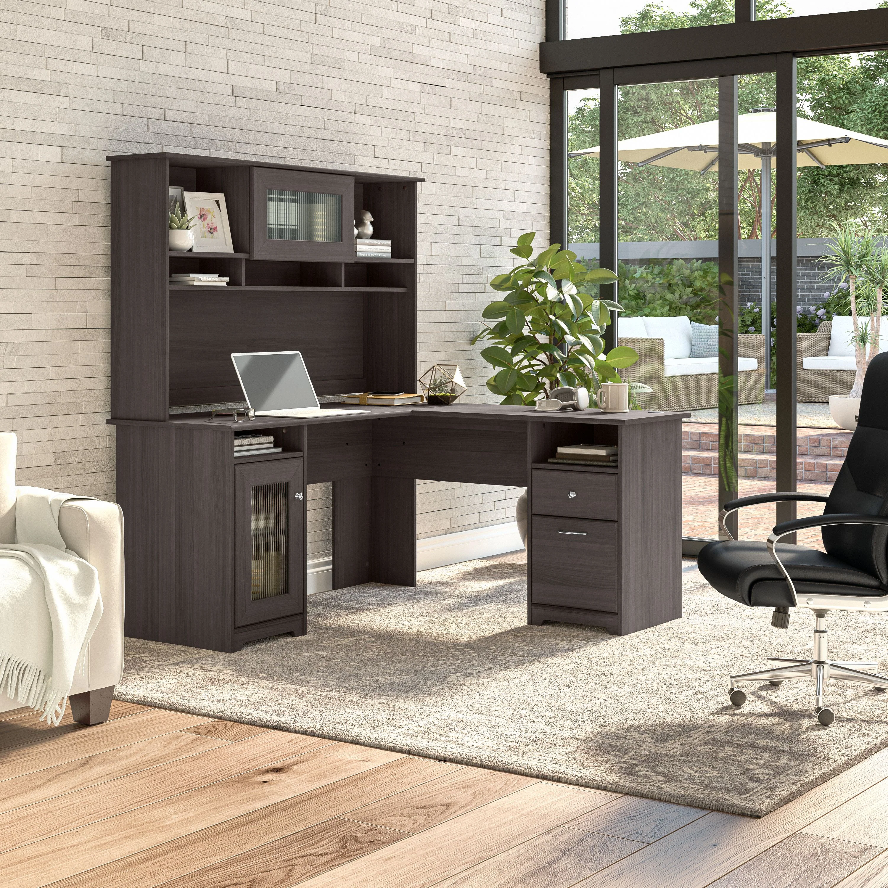

Chairs are one of the most essential and versatile pieces of furniture, designed to support the human body in a seated position. They come in countless styles, materials, and configurations, from the simple wooden dining chair to the ergonomically engineered office chair. Throughout history, chairs have not only served a practical purpose but also reflected social status and design trends, evolving alongside cultures and technologies. Whether placed around a dinner table, in a classroom, or at a work desk, chairs offer comfort, function, and often a touch of personality to any space.
Desks are specialized tables designed primarily for writing, studying, and working, offering a dedicated space for focus and productivity. Typically featuring flat surfaces and often equipped with drawers or compartments, desks help organize tools like papers, books, and electronics. From traditional wooden writing desks to modern standing or adjustable models, their design has evolved to support various tasks and technologies. In offices, schools, and homes alike, desks serve as personal command centers—places where ideas are born, goals are pursued, and tasks are managed. A well-chosen desk can enhance both comfort and efficiency in any workspace.
Carpets are soft floor coverings that add warmth, comfort, and style to a space, transforming bare floors into inviting surfaces. Made from materials like wool, nylon, or polyester, carpets can be woven, tufted, or knotted, and come in a wide variety of colors, patterns, and textures. They not only enhance a room’s aesthetic but also provide insulation, reduce noise, and offer a cushioned surface underfoot. Whether used wall-to-wall or as decorative area rugs, carpets reflect personal taste and cultural tradition, often serving as both practical features and expressive design elements.